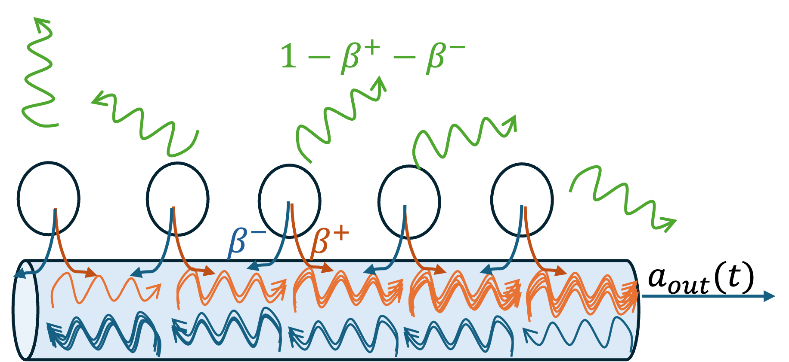
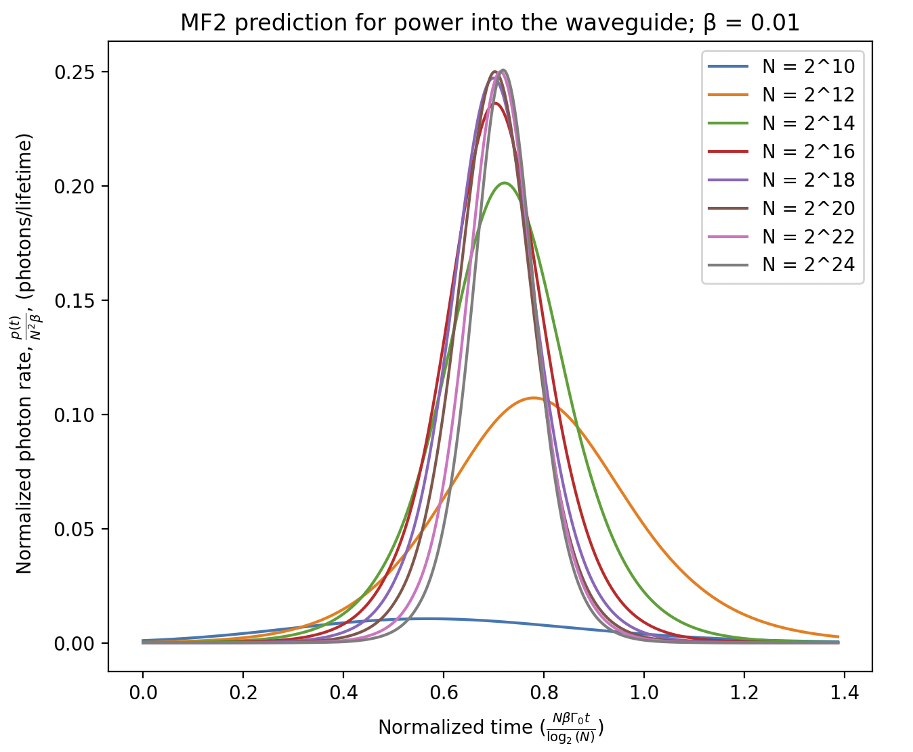

This is a simple example of how atoms can collectively superadiate in a desired channel even in the presence of loss to undesirable channels. For details, refer to our paper on the arXiv: https://arxiv.org/pdf/2603.04660.
We simulate N two-level atoms initialized in the fully excited state.
Each atom emits independently into free space at rate (1−β)Γ₀ and collectively
into a waveguide at rate βΓ₀ as shown in the following schematic. As N increases, the normalized emitted pulse
into the waveguide converges to a universal shape. The parameter β controls the fraction of emission into the waveguide as shown in the schematic, and the convergence to the universal shape is faster for larger β.

The following plot shows the normalized photon emission rate into the waveguide as a function of normalized time as N increases.

You can adjust the parameters N and β using the sliders below to see how the emission pulse evolves.